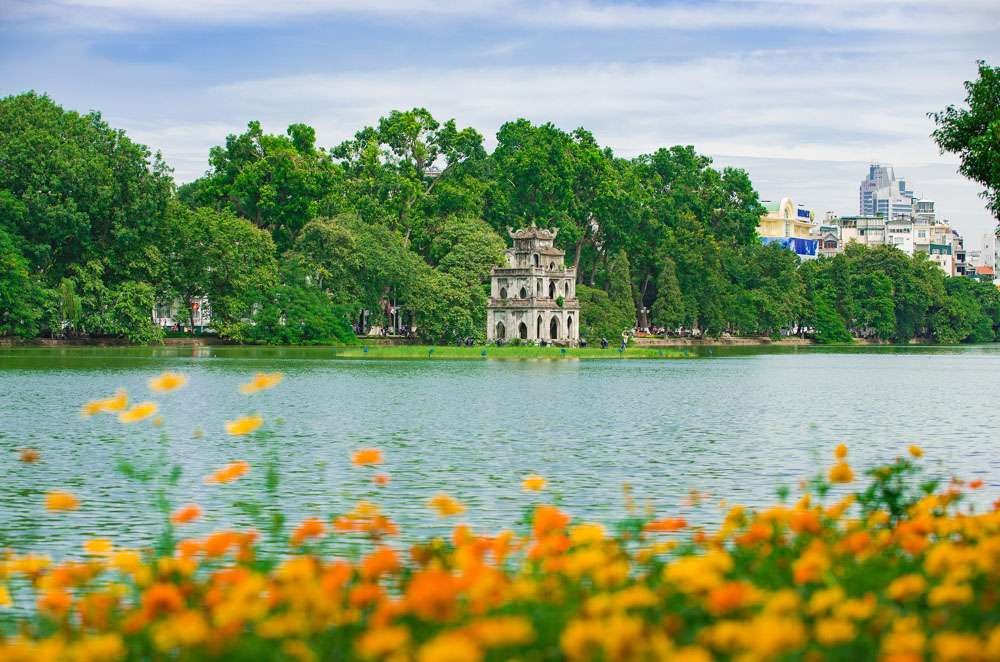
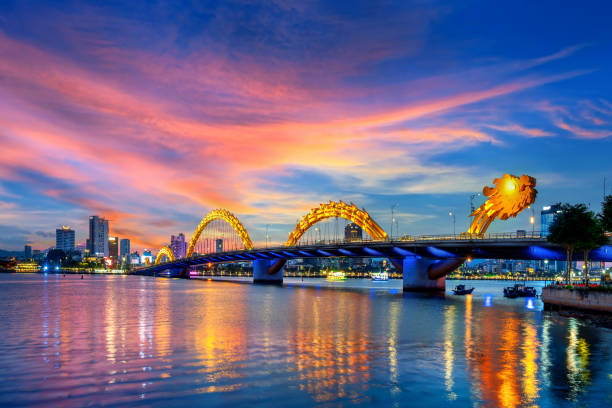
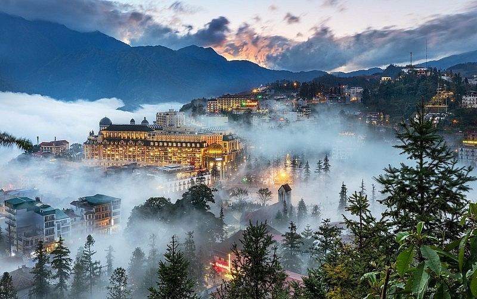

Hà Nội
Thủ đô Việt Nam với nhiều di tích lịch sử và nét văn hóa truyền thống.

Thủ đô Việt Nam với nhiều di tích lịch sử và nét văn hóa truyền thống.
Một trong những thắng cảnh thiên nhiên nổi tiếng nhất Việt Nam.

Thành phố biển hiện đại với những bãi biển đẹp và nhiều điểm tham quan.

Phố cổ nổi tiếng với kiến trúc truyền thống và những chiếc đèn lồng đầy màu sắc.

Vùng núi phía Bắc nổi tiếng với ruộng bậc thang và cảnh quan thiên nhiên.
Việt Nam có nhiều cảnh quan đa dạng từ núi rừng đến biển đảo.